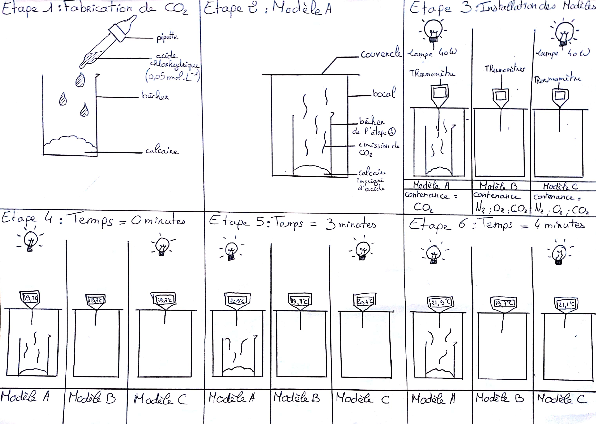

Qui sommes nous ?
Nous sommes des élèves de première S, comme nous nous intéressons à l'univers et à la possibilité d'un nouvel environnement vivable, nous avons donc décidé de créer ce site internet dans le cadre de notre TPE.
Comme vous avez pu le voir dans le titre ci-dessus, nous parlerons de Proxima B pour découvrir s'il est possible de l'adapter à la vie.
Première partie : Proxima B une cousine de notre terre ?
Dans cette Première partie nous parlerons de l'exo-planète Proxima B et nous verrons ses caractéristiques, nous pourrons ainsi savoir si elle pourrait y habiter la vie.
Proxima B est une planète qui a été découverte il y a peu de temps, en effet Proxima B a été publiée le 24 août 2016, détectée par vitesse radiales. Elle serait de type tellurique ou rocheuse ce qui signifie qu'elle est composée essentiellement de roches et qu'elle possède une surface solide. La Terre, Mercure, Vénus, et Mars, sont des planètes Telluriques qui sont dans notre système Solaire.
Proxima B se situe proche d'une étoile appelée Proxima Centauri C. Pour vous situer, Mercure se situe à environ 57.91 millions de kilomètres. Nous connaisons cette distance grâce sa masse minimale qui serait 30% plus élevée que celle de la Terre. Selon l'inclinaison de son orbite, encore inconnue, par rapport à notre ligne de visée, la vraie masse pourrait-être plus grande. En effet, en connaissant sa masse, nous pouvons calculer le demi-grand axe qui est de 0.05 ua. Connaître l'unité astronomique de Proxima B nous permet donc de savoir que la Terre se situe 20 fois plus loin de son étoile que Proxima B de la sienne, ainsi Proxima B à une distance de 7 480 000 de kilomètres à son étoile. Mercure possédant un demi-grand axe de 0.39 ua, elle se situe donc à 56 848 000 kilomètres du soleil. Mercure est la planète la plus proche de notre soleil et présente aucune caractéristique capable de développer la vie, car elle ne possède pas de zone d'habitabilité, cette zone théorique est située autour d'une planète ou les conditions physiques (plus généralement basées sur la température) et où l'eau serait liquide en surface, finalement cette zone aurait suffisamment de conditions pour y créer la vie (La Terre fais donc partie d'une zone d'habitabilité). Le problème est que Proxima B est tellement proche de son étoile que celle-ci possède 2 parties : une qui serait gelée (dû à la non-exposition de son étoile) et une qui serait extrêmement chaude (dû à l’exposition constante de son étoile) mais entre ces parties il existe une mince zone d'habitabilité. De plus, elle recevraient plus de rayons UV (ultraviolet) et de rayons X car l'étoile serait encore trop active ce qui pourrait endommager son atmosphère si elle en possède une.
Proxima Centauri C, l'étoile située près de Proxima B, est une étoile encore active, elle exerce une forte gravité ce qui bloque sa rotation sur elle même (d’où la mince zone d’habitabilité au centres des deux parties) et explique sa période de révolution de 11.186 jours Terrestres. La période de révolution de la Terre est de 365 jours, Proxima B est donc environ 30 fois plus lente pour faire le tour de son étoile.
Nous aimerions maintenant vous présenter quels sont les critères pour la vie afin de vous expliquer, par la suite, à un petit raisonnement pour savoir s'il est possible d'adapter une planète, tel que Proxima B, aux conditions de la vie pour l'Homme.
Critères nécessaires pour la vie sur une planète :
- De l'eau à l'état liquide :
-
arrow_forward L'eau est essentielle à l'apparition des premières formes de vie qui constitue les êtres vivants.
- La présence d'une atmosphère :
-
arrow_forward La vie ne peut pas se développer sans la présence d'une atmosphère, elle permet de filtrer les rayons nocifs du Soleil, comme les rayons ultraviolets et les rayons X. Elle protège donc la vie sur une planète. De plus elle permet l'apparition du cycle de l'eau.
- La présence d'une lithosphère :
-
arrow_forward Une planète doit avoir un support solide pour que la vie soit possible. Une lithosphère permet à des molécules de s'installer et de se développer. Les planètes telluriques ont des lithosphères ( Ex : Terre et Mars )
- Une masse idéale :
-
arrow_forward La masse est un facteur qui influence la force gravitationnelle exercée par une planète, plus la masse est grande plus la gravitation exercée est importante. Elle permet de retenir les particules formant l’atmosphère. La masse doit être idéale pour ne retenir que les gaz. Les gaz retenus dans l'atmosphère terrestres sont: 78,087 % de diazote, 20,95 % de dioxygène, 0,93 % d'argon, 0,04 % de dioxyde de carbone et des traces d'autres gaz.
- Une distance idéale par rapport à l'étoile (la zone habitable) :
-
arrow_forward La planète ne doit pas être trop près de l'étoile, sinon elle recevrait trop d'énergie, donc sa température de surface serait trop élevée, si elle est trop loin elle ne recevra pas assez d'énergie ainsi ça température serait trop basse donc dans ces deux cas la vie serait impossible.
Remarque : La taille et la distance varient selon la puissance et le diamètre d'une l'étoile
Partie 2 : Level up !
Dans cette dernière partie nous parlerons d'adapter un milieu à l'Homme...
Il serait possible de rendre Proxima B vivable grâce à plusieurs systèmes, tel que faire un transfert thermique, c'est un mode d'échange d'énergie thermique entre-deux systèmes, c'est une notion de la thermodynamique ( la science de la chaleur et des machines thermiques ou par la science des grands systèmes en équilibre ).
Il y a en tout 3 types de transferts thermiques : la conduction, la convection et le rayonnement, qui aurait pour but de rendre la partie glaciale a une température souhaitable. En utilisant le transfert thermique avec deux corps en contact, ayant des températures différentes. Le corps le plus chaud cède de l'énergie au corps le plus froid, par conduction, sa température diminue, le désordre et l'agitation thermique diminue. En contrepartie, la température du corps froid augmente, l'agitation thermique augmente en son sein. Ainsi, le problème de cette exemple est qu'il faut que ces parties sois en contact, mais les deux faces de Proxima B ne se touchent pas. C’est pour cela que c’est encore du fictif pour nous. C'est peut-être possible, mais nous ne nous sommes basés que sur des choses que nous pouvons comprendre, les connaissances requises sont bien trop élevées. On pourrait aussi appliquer la terraformation, c'est une forme de l'ingénierie planétaire c'est une application de la technologie théorique qui a pour but de changer les propriétés globales d'une planète qui permet de rendre d'autres planètes habitables pour la vie. La terraformation est une hypothèse émise d’abord sur mars. "Il est dit que « le climat, la surface, et les propriétés actuelles de Mars pourraient être délibérément modifiés afin de rendre la planète habitable pour les humains et toute autre forme de vie terrestre. La terraformation permettrait la colonisation sécurisée et durable de grandes régions de la planète. Les capacités de modification du climat terrestre par l'activité humaine pourraient être appliquées à la planète Mars ; cependant la faisabilité de créer une biosphère planétaire est indéterminée. Plusieurs des méthodes décrites ci-dessus pourraient être à la portée des capacités technologiques de l'humanité, mais « les ressources économiques nécessaires à leur mise en place technique sont encore hors de portée. » (Wikipédia)
Le problème de cette technique c’est qu’elle est très complexe, et nécessite beaucoup d’informations sur la planète. La modifier serait donc compliqué. Ainsi, nous pensons que si on avait plus d’informations et de connaissances, on pourrait utiliser cette hypothèse.
Elle reste à vérifier, si mars sera colonisée par ce principe.
Cependant, on peut faire l'expérience pour démontrer l'effet de serre avec :
-
arrow_forward 3 cloches (bocaux)
-
arrow_forward 2 lampes de 40 W
-
arrow_forward enceinte enrichie en CO2
-
arrow_forward 2 enceintes constituées des conditions normales
-
arrow_forward 3 thermomètres
Les 3 cloches ont des propriétés différentes, la première qui contient du dioxyde de carbone et une lampe, la deuxième contient de l'air normale et une lampe et la troisième uniquement de l'air normale . Ensuite nous allons mesuré à l'aide des 3 thermomètres la température des 3 modules, on s'attends à avoir trois températures différentes ce qui prouverait la présence de gaz à effet de serre .
Mais cette expérience ne marche que dans un petit espace et ne serait peut-être pas viable à l'échelle d'une planète.

Bibliographie :
Proxima B :
-
arrow_forward Planet Found in Habitable Zone Around Nearest Star : eso.org
-
arrow_forward Au plus près de nous, une exoplanète rocheuse potentiellement habitable : CNRS
-
arrow_forward "Terraformation de Mars", consulté le 03/12/2018 : Wikipédia
-
arrow_forward Proxima Centauri b : l’exoplanète pourrait bien être habitable, par Xavier Demeersman : Futura Science
Critère de la vie :
-
arrow_forward Cour de Svt (2nde et 1ère) sur les caractéristiques de la vie et la zone d'habitabilité
Champs magnétique terrestre :
-
arrow_forward Science, vol. 327, 2010, p. 1238-1240
-
arrow_forward « Le très ancien bouclier magnétique de la Terre » , 5 avril 2007 : Sciences et Avenir
-
arrow_forward Science, vol. 529, 2016, p. 387-389
-
arrow_forward "Champ magnétique terrestre" : Wikipédia
Transfert chimique:
-
arrow_forward "Transfert thermique", consulté le 06/12/2018, Wikipédia